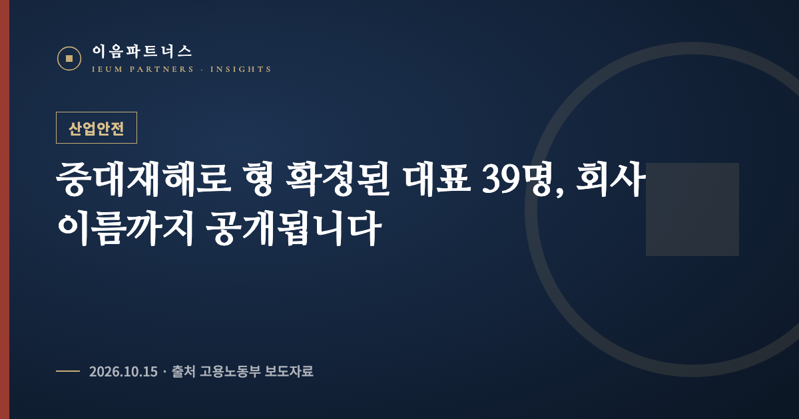

중대재해로 형 확정된 대표 39명, 회사 이름까지 공개됩니다

중대재해가 나면 대표가 처벌받는 데서 끝나지 않습니다. 고용노동부는 2026년 10월 15일, 상반기에 형이 확정된 중대재해 발생 사업장 37곳의 이름과 사고 내용을 관보와 누리집에 공표했습니다. 이 글에서는 공표 내용과 처벌 결과, 형이 확정된 회사들이 가장 많이 어긴 의무를 정리합니다.
회사 이름이 공개되면 거래처나 금융기관, 채용 시장에서의 평판에도 영향을 줄 수 있습니다. 우리 회사의 안전보건 관리 체계가 제대로 갖춰져 있는지 궁금하시다면 카카오톡 채널 이음파트너스로 편하게 문의해 주세요.
무엇이 공개되나
중대재해처벌법은 중대산업재해로 형이 확정·통보되면 사업장 이름, 재해 발생 일시와 장소, 재해 내용과 원인, 그리고 그 기업의 지난 5년간 중대재해 발생 이력까지 공표할 수 있도록 하고 있습니다(고용노동부 보도자료). 고용노동부는 2023년 9월부터 반기마다 공표해 왔고, 이번까지 공표된 사업장은 모두 81곳입니다.
처벌은 어떻게 나왔나
이번에 공표된 사업장의 경영책임자는 도급인 외에 수급인 2명을 포함해 모두 39명입니다. 대부분 집행유예였지만, 처벌과 별개로 회사 이름과 사고 내용이 함께 공개된다는 점은 같습니다. 처벌 결과는 다음과 같습니다.
| 구분 | 내용 |
|---|---|
| 징역형 집행유예 | 35명 |
| 징역형 집행유예와 벌금형 | 1명 |
| 벌금형 | 2명 |
| 실형 | 1명(중대재해처벌법 시행 이후 가장 무거운 징역 3년) |
이번 공표에는 다수의 사상자가 나와 처음으로 경영책임자가 구속·기소됐다가 징역 1년 6개월, 집행유예 3년이 확정된 사업장도 들어 있습니다. 1.2m 높이의 이동식 비계에서 기본 보호구 없이 일하다 떨어진 뒤 별다른 조치 없이 작업을 이어 갔고, 다음 날 노동자가 숨진 사업장도 포함됐습니다.
가장 많이 어긴 의무는 무엇일까
지금까지 공표된 81곳에서 가장 많이 어긴 조항은 유해·위험 요인을 확인하고 개선하는 절차의 점검으로, 75곳(92.6%)이 해당했습니다. 다음은 안전보건관리책임자 등이 업무를 충실히 할 수 있도록 하는 조치로 62곳(76.5%)이었습니다. 위반 조항이 3개인 곳이 31곳(38.3%)으로 가장 많아, 여러 의무를 함께 놓친 경우가 대부분이었습니다.
고용노동부 장관은 “중대재해 발생 사업장에 대해서는 엄정한 수사를 통해 책임을 묻겠다”고 밝혔습니다(고용노동부 보도자료). 서류로만 만든 체계가 아니라 위험을 찾아 고치는 절차가 실제로 돌아가는지가 중요하다는 뜻으로 읽을 수 있습니다.
대표님이 지금 확인할 것
- 유해·위험 요인을 확인하고 개선하는 절차가 있고, 정기적으로 점검하고 있는지
- 안전보건관리책임자 등에게 업무에 필요한 권한과 예산을 주고, 업무 수행을 평가하고 있는지
- 작은 사고가 났을 때 작업을 멈추고 원인을 고친 뒤 다시 시작하는지
참고한 자료
- 고용노동부, 형이 확정된 중대산업재해 발생 사업장 37개소 공표 — 고용노동부 보도자료 (2026.10.15)
공표 대상이 되기 전에 우리 회사 안전보건 관리 체계를 점검해 보고 싶으시다면 카카오톡 채널 이음파트너스로 문의해 주세요.
※ 이 글은 일반적인 정보 제공을 위한 것으로, 개별 사안은 세무사·노무사 등 전문가와 함께 확인하시기 바랍니다.